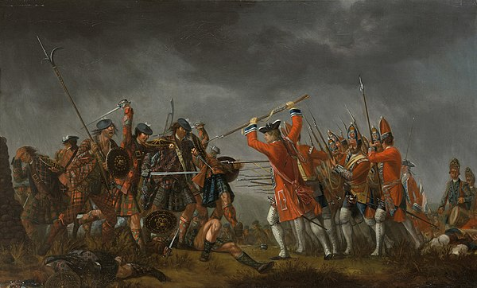
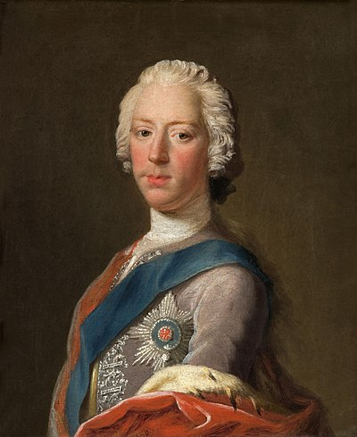
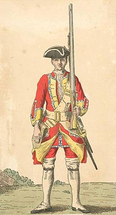
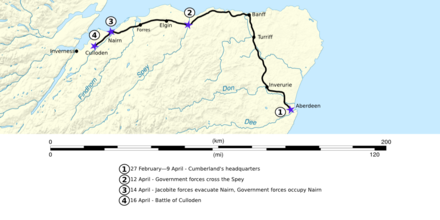
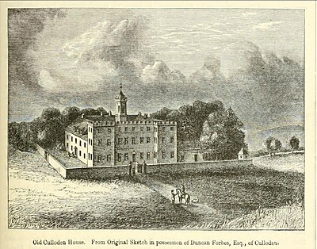
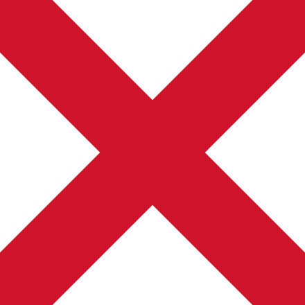

Battle Of Culloden
From Wikipedia, the free encyclopedia
The Battle of Culloden (/kəˈlɒdən/;[5] Scottish Gaelic: Blàr Chùil Lodair) was the final confrontation of the Jacobite rising of 1745. On 16 April 1746, the Jacobite army of Charles Edward Stuart was decisively defeated by a British government force under Prince William Augustus, Duke of Cumberland, on Drummossie Moor near Inverness in the Scottish Highlands. It was the last pitched battle fought on British soil.
Charles was the eldest son of James Stuart, the exiled Stuart claimant to the British throne. Believing there was support for a Stuart restoration in both Scotland and England, he landed in Scotland in July 1745: raising an army of Scots Jacobite supporters, he took Edinburgh by September, and defeated a British government force at Prestonpans. The government recalled 12,000 troops from the Continent to deal with the rising: a Jacobite invasion of England reached as far as Derby before turning back, having attracted relatively few English recruits.
The Jacobites, with limited French military support, attempted to consolidate their control of Scotland, where, by early 1746, they were opposed by a substantial government army. A hollow Jacobite victory at Falkirk failed to change the strategic situation: with supplies and pay running short and with the government troops resupplied and reorganised under the Duke of Cumberland, son of British monarch George II, the Jacobite leadership had few options left other than to stand and fight. The two armies eventually met at Culloden, on terrain that gave Cumberland's larger, well-rested force the advantage. The battle lasted only an hour, with the Jacobites suffering a bloody defeat; between 1,500 and 2,000 Jacobites were killed or wounded,[3][4] while about 300 government soldiers were killed or wounded.[3] While perhaps 5,000 – 6,000 Jacobites remained in arms in Scotland, the leadership took the decision to disperse, effectively ending the rising.[6]
Culloden and its aftermath continue to arouse strong feelings. The University of Glasgow awarded the Duke of Cumberland an honorary doctorate, but many modern commentators allege that the aftermath of the battle and subsequent crackdown on Jacobite sympathisers were brutal, earning Cumberland the sobriquet "Butcher". Efforts were subsequently made to further integrate the Scottish Highlands into the Kingdom of Great Britain; civil penalties were introduced to undermine the Scottish clan system, which had provided the Jacobites with the means to rapidly mobilise an army.

Queen Anne, the last monarch of the House of Stuart, died in 1714, with no surviving children. Under the terms of the Act of Settlement 1701, she was succeeded by her second cousin George I of the House of Hanover, who was a descendant of the Stuarts through his maternal grandmother, Elizabeth, a daughter of James VI and I. Many, however, particularly in Scotland and Ireland, continued to support the claim to the throne of Anne's exiled half-brother, James, who was excluded from the succession under the Act of Settlement for his Roman Catholicism.
On 23 July 1745 James's son Charles Edward Stuart landed on Eriskay in the Western Isles in an attempt to reclaim the throne for his father and was accompanied only by the "Seven Men of Moidart".[7] Most of his Scottish supporters advised he return to France, but his persuasion of Donald Cameron of Lochiel to back him encouraged others to commit, and the rebellion was launched, with the raising of the Jacobite standard at Glenfinnan on 19 August. The Jacobite army entered Edinburgh on 17 September. James was proclaimed King of Scotland the next day and Charles his regent.[8] Attracting more recruits, the Jacobites comprehensively defeated a government force at the Battle of Prestonpans on 21 September. The London government now recalled the Duke of Cumberland, the King's younger son and commander of the British army in Flanders, along with 12,000 troops.[9]
The Prince's Council, a committee formed of 15 to 20 senior leaders, met on 30 and 31 October to discuss plans to invade England. The Scots wanted to consolidate their position; they were willing to assist an English rising or French landing but not on their own.[10] For Charles, the main prize was England;. He argued that removing the Hanoverians would guarantee an independent Scotland and assured the Scots that the French were planning to land in southern England and that thousands of English supporters would join him once across the border.[11]
Despite their doubts, the Council agreed to the invasion on condition that the promised English and French support was forthcoming. The Jacobite Army entered England on 8 November[12] and captured Carlisle on 15 November, continued south through Preston and Manchester and reached Derby on 4 December. There had been no sign of a French landing or any significant number of English recruits, and the Jacobites risked being caught between two armies, each one twice their size: Cumberland's, advancing north from London and George Wade's moving south from Newcastle upon Tyne. Despite Charles' opposition, the Council was overwhelmingly in favour of retreat and turned northwards the next day.[13]
Apart from a skirmish at Clifton Moor, the Jacobite army evaded pursuit and crossed back into Scotland on 20 December. Entering and returning from England were considerable military achievements, and morale was high. The Jacobite strength increased to over 8,000 with the addition of a substantial north-eastern contingent under Lord Lewis Gordon, as well as Scottish and Irish regulars in French service.[14] French-supplied artillery was used to besiege Stirling Castle, the strategic key to the Highlands. On 17 January, the Jacobites dispersed a relief force under Henry Hawley at the Battle of Falkirk Muir although the siege made little progress.[15]
On 1 February, the siege of Stirling was abandoned, and the Jacobites withdrew to Inverness.[16] Cumberland's army advanced along the coast and entered Aberdeen on 27 February, and both sides halted operations until the weather improved.[17] Several French shipments were received during the winter but the Royal Navy's blockade led to shortages of both money and food. When Cumberland left Aberdeen on 8 April, Charles and his officers agreed giving battle was their best option.[18]
Jacobite Army

The Jacobite Army is often assumed to have been largely composed of Gaelic-speaking Catholic Highlanders: in reality nearly a quarter of the rank and file were recruited in Aberdeenshire, Forfarshire and Banffshire, with another 20% from Perthshire.[20][21] By 1745, Catholicism was the preserve of a small minority, and large numbers of those who joined the Rebellion were Non-juring Episcopalians.[22] Although the army was predominantly Scots, it contained a few English recruits plus significant numbers of Irish, Scottish and French professionals in French service with the Irish Brigade and Royal Ecossais.
To mobilise an army quickly, the Jacobites had relied heavily on the traditional right retained by many Scottish landowners to raise their tenants for military service. This assumed limited, short-term warfare: a long campaign demanded greater professionalism and training, and the colonels of some Highland regiments considered their men to be uncontrollable.[23][note 1] A typical 'clan' regiment was officered by the heavily-armed tacksmen, with their subtenants acting as common soldiers.[25][26] The tacksmen served in the front rank, taking proportionately high casualties; the gentlemen of the Appin Regiment numbered one-quarter of those killed and one-third of those wounded from their regiment.[25] Many Jacobite regiments, notably those from the northeast, were organised and drilled more conventionally, but as with the Highland regiments were inexperienced and hurriedly trained.
The Jacobites started the campaign relatively poorly armed. Although Highlanders are often pictured equipped with a broadsword, targe shield and pistol, this applied mainly to officers; most men seem to have been drilled in conventional fashion with muskets as their main weapon.[27] As the campaign progressed, supplies from France improved their equipment considerably and by the time of Culloden, many were equipped with 0.69 in (17.5 mm) calibre French and Spanish firelocks.[27]
During the latter stage of the campaign, the Jacobites were reinforced by French regulars, mainly drawn from Picquets or detachments from regiments of the Irish Brigade along with a Franco-Irish cavalry unit, Fitzjames's Horse. Around 500 men from the Irish Brigade fought in the battle, around 100 of whom were thought to have been recruited from 6th (Guise's) Foot taken prisoner at Fort Augustus. The Royal Écossais also contained British deserters; its commander attempted to raise a second battalion after the unit had arrived in Scotland.[28] Much of the Jacobite cavalry had been effectively disbanded due to a shortage of horses; Fitzjames', Strathallan's Horse, the Life Guards and the 'Scotch Hussars' retained a reduced presence at Culloden. The Jacobite artillery is generally regarded as playing little part in the battle, all but one of the cannon being 3-pounders.[28]
Government Army
Cumberland's army at Culloden comprised 16 infantry battalions, including four Scottish units and one Irish.[29] The bulk of the infantry units had already seen action at Falkirk, but had been further drilled, rested and resupplied since then.
Many of the infantry were experienced veterans of Continental service, but on the outbreak of the Jacobite rising, extra incentives were given to recruits to fill the ranks of depleted units. On 6 September 1745, every recruit who joined the Guards before 24 September was given £6, and those who joined in the last days of the month were given £4. In theory, a standard single-battalion British infantry regiment was 815 strong, including officers, but was often smaller in practice and at Culloden, the regiments were not much larger than about 400 men.[30]
The government cavalry arrived in Scotland in January 1746. Many were not combat experienced, having spent the preceding years on anti-smuggling duties. A standard cavalryman had a Land Service pistol and a carbine, but the main weapon used by the British cavalry was a sword with a 35-inch blade.[31]
The Royal Artillery vastly outperformed their Jacobite counterparts during the Battle of Culloden. However, until this point in the campaign, the government artillery had performed dismally. The main weapon of the artillery was the 3-pounder. This weapon had a range of 500 yards (460 m) and fired two kinds of shot: round iron and canister. The other weapon used was the Coehorn mortar. These had a calibre of 4+2⁄5 inches (11 cm).[32]

After the defeat at Falkirk Muir, Cumberland arrived in Scotland in January 1746 to take command of government forces. Deciding to wait out the winter, he moved his main army northwards to Aberdeen: 5,000 Hessian troops under Prince Frederick were stationed around Perth to suppress a possible Jacobite offensive in that area. The weather had improved to such an extent by 8 April that Cumberland resumed the campaign. His army reached Cullen on 11 April, where it was joined by six further battalions and two cavalry regiments.[33] On 12 April, Cumberland's force forded the Spey, which had been guarded by a 2,000-strong Jacobite detachment under Lord John Drummond, but Drummond retreated towards Elgin and Nairn, rather than offer resistance, for which he was sharply criticised after the rising by several Jacobite memoirists. By 14 April, the Jacobites had evacuated Nairn, and Cumberland's army camped at Balblair just west of the town.[34]

Several significant Jacobite units were still en route or engaged far to the north, but on learning of the government advance, their main army of about 5,400 left its base at Inverness on 15 April and assembled in battle order at the estate of Culloden, 5 miles (8 km) to the east.[35] The Jacobite leadership was divided on whether to give battle or abandon Inverness, but with most of their dwindling supplies stored in the town, there were few options left for holding their army together.[36] The Jacobite adjutant-general, John O'Sullivan, identified a suitable site for a defensive action at Drummossie Moor,[37] a stretch of open moorland between the walled enclosures of Culloden Parks[38] to the north and those of Culwhiniac to the south.[39]
Jacobite Lieutenant-General Lord George Murray stated that he "did not like the ground" at Drummossie Moor, which was relatively flat and open, and suggested an alternative steeply-sloping site near Daviot Castle. That was inspected by Brigadier Stapleton of the Irish Brigade and Colonel Ker on the morning of 15 April; they rejected it as the site was overlooked and the ground "mossy and soft". Murray's choice also failed to protect the road into Inverness, a key objective of giving battle.[40] The issue had not been fully resolved by the time of the battle, and in the event, circumstances largely dictated the point at which the Jacobites formed line, some distance to the west of the site that had originally been chosen by Sullivan.[36]
Night attack on Nairn
On 15 April, the government army celebrated Cumberland's 25th birthday by issuing two gallons of brandy to each regiment.[33] At Charles's suggestion, the Jacobites tried that evening to repeat the success of Prestonpans by carrying out a night attack on the government encampment.
Murray proposed that they set off at dusk and march to Nairn; he planned to have the right wing of the first line attack Cumberland's rear while the Duke of Perth with the left wing would attack the government's front. In support of Perth, Lord John Drummond and Charles would bring up the second line. The Jacobite force, however, started out well after dark, partly out of concerns of being spotted by ships of the Royal Navy then in the Moray Firth. Murray led it across country with the intention of avoiding government outposts. Murray's onetime aide-de-camp, James Chevalier de Johnstone later wrote that "this march across country in a dark night which did not allow us to follow any track [was] accompanied with confusion and disorder".[41]
When the leading troop had reached Culraick, still 2 miles (3.2 km) from where Murray's wing was to cross the River Nairn and encircle the town, there was only one hour left before dawn. After a heated council with other officers, Murray concluded that there was not enough time to mount a surprise attack and that the offensive should be aborted. Sullivan went to inform Charles Edward Stuart of the change of plan but missed him in the dark. Meanwhile, instead of retracing his path back, Murray led his men left down the Inverness road. In the darkness, while Murray led one third of the Jacobite forces back to camp, the other two thirds continued towards their original objective, unaware of the change in plan. One account of that night even records as Perth's men having made contact with government troops before they realised that the rest of the Jacobite force had turned home. A few historians, such as Jeremy Black and Christopher Duffy, have suggested that if Perth had carried on, the night attack might have remained viable, but most have disagreed, as perhaps only 1,200 of the Jacobite force accompanied him.[42][43][44]
Not long after the exhausted Jacobite forces had made it back to Culloden, an officer of Lochiel's regiment, who had been left behind after falling asleep in a wood, arrived with a report of advancing government troops.[41] By then, many Jacobite soldiers had dispersed in search of food or returned to Inverness, and others were asleep in ditches and outbuildings. Several hundred of their army may have missed the battle.

After the abortive night attack, the Jacobites formed up in substantially the same battle order as the previous day, with the Highland regiments forming the first line. They faced north-east over common grazing land, with the Water of Nairn about 1 km to their right.[45] Their left wing, anchored on the Culloden Park walls, was under the command of the titular Duke of Perth, James Drummond; his brother John Drummond commanded the centre. The right wing, flanked by the Culwhiniac enclosure walls, was led by Murray. Behind them, the Low Country regiments were drawn up in column, in accordance with French practice. During the morning, snow and hail "started falling very thick" onto the already wet ground and later turned to rain, but the weather turned fair as the battle started.[46]
Cumberland's army had struck camp and become underway by 5 am, leaving the main Inverness road and marching across country. By 10 am, the Jacobites finally saw them approaching at a distance of around 4 km. At 3 km from the Jacobite position, Cumberland gave the order to form line, and the army marched forward in full battle order.[47] John Daniel, an Englishman serving with Charles's army, recorded that on seeing the government troops the Jacobites began to "huzza and bravado them" but without response: "on the contrary, they continued proceeding, like a deep sullen river".[48] Once within 500 metres, Cumberland moved his artillery up through the ranks.[47]
As Cumberland's forces formed into line of battle, it became clear that their right flank was in an exposed position, and Cumberland moved up additional cavalry and other units to reinforce it.[49] In the Jacobite lines, Sullivan moved two battalions of Lord Lewis Gordon's regiment to cover the walls at Culwhiniac against a possible flank attack by government dragoons. Murray also moved the Jacobite right slightly forwards. That "changement", as Sullivan called it, had the unintended result of skewing the Jacobite line and opening gaps and so Sullivan ordered Perth's, Glenbucket's and the Edinburgh Regiment from the second line to the first. While the Jacobites' front rank now substantially outnumbered that of Cumberland, their reserve was further depleted, increasing their reliance on a successful initial attack.[50]
Artillery Exchange
At approximately 1 pm, Finlayson's Jacobite batteries opened fire; possibly in response to Cumberland sending forward Lord Bury to within 100 m of the Jacobite lines to "ascertain the strength of their battery".[51] The government artillery responded shortly afterwards. Some later Jacobite memoirs suggest that their troops were then subjected to artillery bombardment for 30 minutes or more while Charles delayed an advance, but government accounts suggest a much shorter exchange before the Jacobites attacked. Campbell of Airds, in the rear, timed it at 9 minutes, but Cumberland's aide-de-camp Yorke suggested only 2 or 3 minutes.[52]
The duration implies that the government artillery is unlikely to have fired more than thirty rounds at extreme range: statistical analysis concludes that would have caused only 20–30 Jacobite casualties at that stage, rather than the hundreds suggested by some accounts.[52]
Jacobite Advance
Shortly after 1 pm, Charles issued an order to advance, which Colonel Harry Kerr of Graden first took to Perth's regiment, on the extreme left. He then rode down the Jacobite line giving orders to each regiment in turn. Sir John MacDonald and Brigadier Stapleton were also sent forward to repeat the order.[53] As the Jacobites left their lines, the government gunners switched to canister shot, which was augmented by fire from the coehorn mortars situated behind the government front line. As there was no need for careful aiming when canister was used, the rate of fire increased dramatically, and the Jacobites found themselves advancing into heavy fire.[51]
On the Jacobite right, the Atholl Brigade, Lochiel's and the Appin Regiment left their start positions and charged towards Barrell's and Munro's regiments. Within a few hundred yards, however, the centre regiments, Lady Mackintosh's and Lovat's, had begun to swerve rightwards to try to avoid canister fire or to follow the firmer ground along the road running diagonally across Drummossie Moor. The five regiments became entangled as a single mass, converging on the government left. The confusion was worsened when the three largest regiments lost their commanding officers, all at the front of the advance: MacGillivray and MacBean of Lady Mackintosh's both went down; Inverallochie of Lovat's fell and Lochiel had his ankles broken by canister within a few yards of the government lines.
The Jacobite left, by contrast, advanced much more slowly, hampered by boggy ground and by having several hundred yards further to cover. According to the account of Andrew Henderson, Lord John Drummond walked across the front of the Jacobite lines to try and tempt the government infantry into firing early, but they maintained their discipline. The three MacDonald regiments (Keppoch's, Clanranald's and Glengarry's) stalled before resorting to ineffectual long-range musket fire. They also lost senior officers, as Clanranald was wounded and Keppoch killed. The smaller units on their right (Maclachlan's Regiment and Chisholm's and Monaltrie's battalions) advanced into an area swept by artillery fire and suffered heavy losses before falling back.
Engagement of government left wing
The Jacobite right was particularly hard hit by a volley from the government regiments at nearly point-blank range, but many of its men still reached the government lines, and for the first time, a battle was decided by a direct clash between charging Highlanders and formed infantry equipped with muskets and socket bayonets. The brunt of the Jacobite impact, led by Lochiel's regiment, was taken by only two government regiments: Barrell's 4th Foot and Dejean's 37th Foot. Barrell's lost 17 killed and suffered 108 wounded, out of a total of 373 officers and men. Dejean's lost 14 killed and had 68 wounded, with the unit's left wing taking a disproportionately-higher number of casualties. Barrell's regiment temporarily lost one of its two colours.[note 2] Major-General Huske, who was in command of the government's second line, quickly organised the counterattack. Huske ordered forward all of Lord Sempill's Fourth Brigade, which had a combined total of 1,078 men (Sempill's 25th Foot, Conway's 59th Foot, and Wolfe's 8th Foot). Also sent forward to plug the gap was Bligh's 20th Foot, which took up position between Sempill's 25th and Dejean's 37th. Huske's counter formed a five battalion strong horseshoe-shaped formation which trapped the Jacobite right wing on three sides.[55]
Poor Barrell's regiment were sorely pressed by those desperadoes and outflanked. One stand of their colours was taken; Collonel Riches hand cutt off in their defence ... We marched up to the enemy, and our left, outflanking them, wheeled in upon them; the whole then gave them 5 or 6 fires with vast execution, while their front had nothing left to oppose us, but their pistolls and broadswords; and fire from their center and rear, (as, by this time, they were 20 or 30 deep) was vastly more fatal to themselves, than us. — Captain-Lieutenant James Ashe Lee of Wolfe's 8th Foot[56]
With the Jacobites who were left under Perth failing to advance further, Cumberland ordered two troops of Cobham's 10th Dragoons to ride them down. The boggy ground, however, impeded the cavalry, and they turned to engage the Irish Picquets whom Sullivan and Lord John Drummond had brought up in an attempt to stabilise the deteriorating Jacobite left flank. Cumberland later wrote: "They came running on in their wild manner, and upon the right where I had placed myself, imagining the greatest push would be there, they came down there several times within a hundred yards of our men, firing their pistols and brandishing their swords, but the Royal Scots and Pulteneys hardly took their fire-locks from their shoulders, so that after those faint attempts they made off; and the little squadrons on our right were sent to pursue them".[58][59]
Jacobite collapse and rout
With the collapse of the left wing, Murray brought up the Royal Écossais and Kilmarnock's Footguards, who were still unengaged, but when they had been brought into position, the Jacobite first line had been routed. The Royal Écossais exchanged musket fire with Campbell's 21st and commenced an orderly retreat, moving along the Culwhiniac enclosure to shield themselves from artillery fire. Immediately, the half battalion of Highland militia, commanded by Captain Colin Campbell of Ballimore, which had stood inside the enclosure ambushed them. In the encounter, Campbell of Ballimore was killed along with five of his men. The result was that the Royal Écossais and Kilmarnock's Footguards were forced out into the open moor and were engaged by three squadrons of Kerr's 11th Dragoons. The fleeing Jacobites must have put up a fight since Kerr's 11th recorded at least 16 horses killed during the entirety of the battle.

The Irish Picquets under Stapleton bravely covered the Highlanders' retreat from the battlefield, preventing the fleeing Jacobites from suffering heavy casualties. That action cost half of the 100 casualties that they suffered in the battle.[60] The Royal Écossais appear to have retired from the field in two wings; one part surrendered after suffering 50 killed or wounded, but their colours were not taken and a large number retired from the field with the Jacobite Lowland regiments.[61] A few Highland regiments also withdrew in good order, notably Lovat's first battalion, which retired with colours flying. The government dragoons let it withdraw, rather than risk a confrontation.[62] One of at least fourteen standards or colours recorded as captured by government forces at the battle.[63] That and a similar blue saltire may have been used by the Atholl Brigade.[64]
The stand by the French regulars gave Charles and other senior officers time to escape. Charles seems to have been rallying Perth's and Glenbucket's regiments when Sullivan rode up to Captain Shea, commander of his bodyguard: "Yu see all is going to pot. Yu can be of no great succor, so before a general deroute wch will soon be, Seize upon the Prince & take him off ...".[61] Contrary to government depictions of Charles as a coward, he yelled "they won't take me alive!" and called for a final charge into the government lines:[65] Shea, however, followed Sullivan's advice and led Charles from the field, accompanied by Perth and Glenbucket's regiments.
From that point onward, the fleeing Jacobite forces were split into several groups: the Lowland regiments retired southwards, making their way to Ruthven Barracks, and the remains of the Jacobite right wing also retired southwards. The MacDonald and the other Highland left-wing regiments, however, were cut off by the government cavalry and were forced to retreat down the road to Inverness. The result was that they were a clear target for government dragoons. Major-General Humphrey Bland led the pursuit of the fleeing Highlanders, giving "Quarter to None but about Fifty French Officers and Soldiers".[61]
Conclusion: casualties and prisoners
Jacobite casualties are estimated at between 1,500 and 2,000 killed or wounded, with many of them occurring in the pursuit after the battle.[3][4] Cumberland's official list of prisoners taken includes 154 Jacobites and 222 "French" prisoners (men from the "foreign units" in the French service). Added to the official list of those apprehended were 172 of the Earl of Cromartie's men, captured after a brief engagement the day before near Littleferry.
In striking contrast to the Jacobite losses, the government losses were reported as 50 dead and 259 wounded. Of the 438 men of Barrell's 4th Foot, 17 were killed and 104 were wounded. However, a large proportion of those recorded as wounded are likely to have died of their wounds. Only 29 men out of the 104 wounded from Barrell's 4th Foot later survived to claim pensions, and all six of the artillerymen recorded as wounded later died.[3]
Several senior Jacobite commanding officers were casualties, including Keppoch; Viscount Strathallan; Commissary-General Lachlan Maclachlan; and Walter Stapleton, who died of wounds shortly after the battle. Others, including Kilmarnock, were captured. The only high-ranking government officer casualty was Lord Robert Kerr, the son of William Kerr, 3rd Marquess of Lothian. Sir Robert Rich, 5th Baronet, who was a lieutenant-colonel and the senior officer commanding Barrell's 4th Foot, was badly wounded, losing his left hand and receiving several wounds to his head. A number of captains and lieutenants had also been wounded.
Collapse of the Jacobite campaign
As the first of the fleeing Highlanders approached Inverness, they were met by the 2nd battalion of Lovat's regiment, led by the Master of Lovat. It has been suggested that Lovat shrewdly switched sides and turned upon the retreating Jacobites, an act that would explain his remarkable rise in fortune in the years that followed.[66]
Following the battle, the Jacobites' Lowland regiments headed south towards Corrybrough and made their way to Ruthven Barracks, and their Highland units made their way north towards Inverness and on through to Fort Augustus. There, they were joined by Barisdale's battalion of Glengarry's regiment and a small battalion of MacGregors.[66] At least two of those present at Ruthven, James Johnstone and John Daniel, recorded that the Highland troops remained in good spirits despite the defeat and eager to resume the campaign. At that point, continuing Jacobite resistance remained potentially viable in terms of manpower. At least a third of the army had either missed or slept through Culloden, which along with survivors from the battle gave a potential force of 5,000 to 6,000 men.[67] However the roughly 1,500 men who assembled at Ruthven Barracks received orders from Charles to the effect that the army should disperse until he returned with French support.[68]
Similar orders must have been received by the Highland units at Fort Augustus, and by 18 April, the majority of the Jacobite army had been disbanded. Officers and men of the units in French service made for Inverness, where they surrendered as prisoners of war on 19 April. Most of the rest of the army broke up, with men heading for home or attempting to escape abroad,[66] although the Appin Regiment amongst others was still in arms as late as July.
Many senior Jacobites made their way to Loch nan Uamh, where Charles Edward Stuart had first landed at the outset of the campaign in 1745. There, on 30 April, they were met by two French frigates: the Mars and Bellone. Two days later, the French ships were spotted and attacked by three smaller Royal Navy sloops: the Greyhound, Baltimore, and Terror. The result was the last real engagement of the campaign. During the six hours in which the battle continued, the Jacobites recovered cargo that had been landed by the French ships, including £35,000 of gold.[66]
With visible proof that the French had not deserted them, a group of Jacobite leaders attempted to prolong the campaign. On 8 May, nearby at Murlaggan, Lochiel, Lochgarry, Clanranald and Barisdale all agreed to rendezvous at Invermallie on 18 May, as did Lord Lovat and his son. The plan was that there they would be joined by what remained of Keppoch's men and Macpherson of Cluny's regiment, which had not taken part in the battle at Culloden. However, things did not go as planned. After about a month of relative inactivity, Cumberland moved his army into the Highlands, and on 17 May, three battalions of regulars and eight Highland companies reoccupied Fort Augustus. The same day, the Macphersons surrendered. On the day of the planned rendezvous, Clanranald never appeared and Lochgarry and Barisdale showed up with only about 300 combined, most of whom immediately dispersed in search of food. Lochiel, who commanded possibly the strongest Jacobite regiment at Culloden, mustered 300 men. The group dispersed, and the following week, the government launched punitive expeditions into the Highlands that continued throughout the summer.[66][68]
After his flight from the battle, Charles Edward Stuart made his way towards the Hebrides, accompanied by a small group of supporters. By 20 April, Charles had reached Arisaig on the west coast of Scotland. After spending a few days with his close associates, he sailed for the island of Benbecula in the Outer Hebrides. From there, he travelled to Scalpay, off the east coast of Harris, and from there made his way to Stornoway.[69] For five months, Charles crisscrossed the Hebrides, constantly pursued by government supporters and under threat from local lairds, who were tempted to betray him for the £30,000 upon his head.[70] During that time, he met Flora Macdonald, who famously aided him in a narrow escape to Skye. Finally, on 19 September, Charles reached Borrodale on Loch nan Uamh in Arisaig, where his party boarded two small French ships, which ferried them to France.[69] He never returned to Scotland.

Repercussions and persecution
The morning after the Battle of Culloden, Cumberland issued a written order reminding his men that "the public orders of the rebels yesterday was to give us no quarter".[note 3] Cumberland alluded to the belief that such orders had been found upon the bodies of fallen Jacobites. In the days and weeks that followed, versions of the alleged orders were published in the Newcastle Journal and the Gentleman's Journal. Today, only one copy of the alleged order to "give no quarter" exists.[72] It is, however, considered to be nothing but a poor attempt at forgery since it is neither written nor signed by Murray, and it appears on the bottom half of a copy of a declaration published in 1745. In any event, Cumberland's order was not carried out for two days after which contemporary accounts report that for the next two days the moor was searched, and many of those wounded were put to death. The orders issued by Lord George Murray for the conduct of the aborted night attack in the early hours of 16 April suggest that it would have been every bit as merciless. The instructions were to use only swords, dirks and bayonets, to overturn tents and subsequently to locate "a swelling or bulge in the fallen tent, there to strike and push vigorously".[72][note 4] In total, over 20,000 head of livestock, sheep, and goats were driven off and sold at Fort Augustus, where the soldiers split the profits.[74]
While in Inverness, Cumberland emptied the jails that were full of people imprisoned by Jacobite supporters by replacing them with Jacobites themselves.[66] Prisoners were taken south to England to stand trial for high treason. Many were held on hulks on the Thames or in Tilbury Fort, and executions took place in Carlisle, York and Kennington Common.[70] The common Jacobite supporters fared better than the ranking individuals. In total, 120 common men were executed, one third of them being deserters from the British Army.[70] [note 5] The common prisoners drew lots amongst themselves, and only one out of twenty actually came to trial. Although most of those who stood trial were sentenced to death, almost all of them had their sentences commuted to penal transportation to the British colonies for life by the Traitors Transported Act 1746 (20 Geo. II, c. 46).[77] In all, 936 men were thus transported, and 222 more were banished. Even so, 905 prisoners were actually released under the Act of Indemnity that was passed in June 1747. Another 382 obtained their freedom by being exchanged for prisoners of war being held by France. Of the total 3,471 prisoners recorded, nothing is known of the fate of 648.[78] The high-ranking "rebel lords" were executed on Tower Hill in London.
Following up on the military success won by their forces, the British government enacted laws to further integrate Scotland, specifically the Scottish Highlands, with the rest of Britain. Members of the Episcopal clergy were required to give oaths of allegiance to the reigning Hanoverian dynasty.[79] The Heritable Jurisdictions (Scotland) Act 1746 ended the hereditary right of landowners to govern justice upon their estates through barony courts.[80] Prior to the Act, feudal lords (which included clan chiefs) had considerable judicial and military power over their followers such as the oft-quoted power of "pit and gallows".[70][79] Lords who were loyal to the government were greatly compensated for the loss of these traditional powers. For example, the Duke of Argyll was given £21,000.[70] The lords and clan chiefs who had supported the Jacobite rebellion were stripped of their estates, which were then sold and the profits were used to further trade and agriculture in Scotland.[79] The forfeited estates were managed by factors. Anti-clothing measures were taken against the Highland dress by an Act of Parliament in 1746. The result was that the wearing of tartan was banned except as a uniform for officers and soldiers in the British Army and later landed men and their sons.[81]